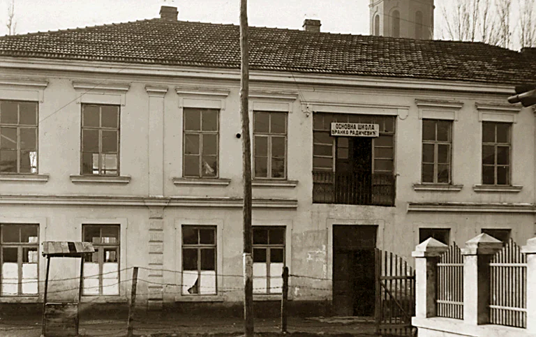
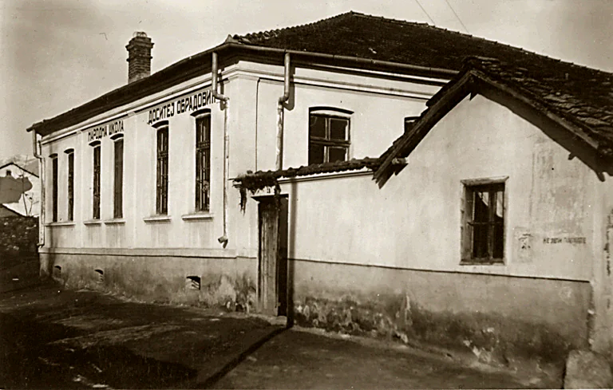
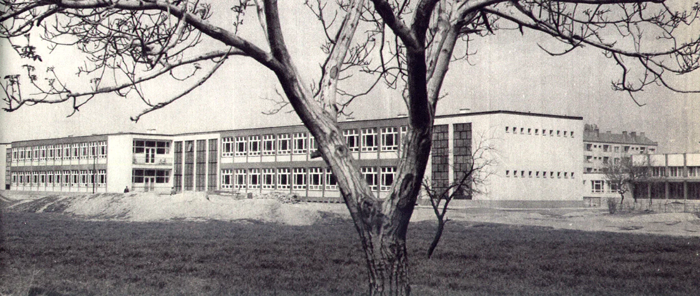

Facultad de Filosofía
- Realización
- Kole Čašule, Blagoja Drnkov
- Año
- 1947
- Duración
- 00:04

La escuela secundaria Idadija. Construida a finales del siglo XIX. La enseñanza duraba ocho años y podían asistir alumnos de todas las religiones. Más tarde el edificio fue Escuela Normal, hasta el terremoto de 1963, que lo dañó gravemente. Por eso se derribó en 1965, y como recuerdo se conservó la entrada con sus cuatro columnas. Aún hoy los vecinos llaman Idadija a esa zona. Al fondo, la escuela de artes y oficios.

La Escuela Normal (años 1920)

Parte del parque municipal con el edificio de la escuela de oficios. (años 1920)

El edificio de la escuela secundaria Idadija, y después de la Segunda Guerra Mundial «Escuela Normal», destruido en el catastrófico terremoto del 26 de julio de 1963.

La escuela de artes y oficios, construida a finales del siglo XIX. Estaba muy cerca de la Escuela Normal. En el terremoto de 1963 sufrió graves daños, por lo que fue demolida.

La universidad de Skopie en 1920 en el malecón del Vardar. Albergaba la Facultad de Filosofía como parte de la Universidad de Belgrado.

La universidad de Skopie en 1920 en el malecón del Vardar. Albergaba la Facultad de Filosofía como parte de la Universidad de Belgrado.

El edificio del patio del instituto masculino. (1912)

El instituto masculino de Skopie, construido en 1902-04. Destaca por sus elementos neoclásicos. En primer plano, la calle «Poincaré», más tarde «Leningradska».

El instituto masculino, construido en 1902.

La gran madrasa, en la calle Ilindenska (años 1920)

La escuela primaria «Santa Madre de Dios» - años 1920.

Escuela primaria «Jovan Skerlić» - años 1920.

Tercera escuela primaria pública (años 1920)

La escuela primaria serbo-judía en el barrio judío.
(finales del siglo XIX)

La escuela primaria «Đura Jakšić» (años 1920)

Escuela primaria pública «Reina María» - años 1920.

La escuela primaria «Zar Dušan», junto al edificio Macura en la plaza - años 1920.
La escuela primaria «Zar Dušan», junto al edificio Macura en la plaza - años 1920.

La escuela primaria «Branko Radičević» - años 1920.

Escuela pública «Ljuba Kovačević» - años 1920.

Escuela pública «Vladimir Karić» - años 1920.

Escuela pública «Dositej Obradović», en el barrio de Sauk Česma - Čair - años 1920.

Escuela primaria «Vuk Stefanović Karadžić» - años 1920.

Escuela pública «Mehmed Sokolović» - años 1920.

Escuela pública «Osman Džikić» - años 1920.

La Academia de Comercio - años 1920.

La Academia de Comercio - años 1920.

El patio del instituto masculino - años 1920.

El nuevo edificio de la escuela primaria «Dositej Obradović», construido en los años 1930.

La escuela primaria «Goce Delčev». (fotografiada en 1934)

La escuela primaria «Goce Delčev». (fotografiada hacia 1950)

El instituto femenino - de noche. En primer plano, el monumento a los libertadores de Skopie. (hacia los años 1950)

El instituto femenino, construido en los años 1930; la foto es de los años 1950. Ante el edificio, el monumento «A los libertadores de Skopie»

Facultad de Ciencias Naturales - años 1950

La escuela primaria «11 de Octubre» - años 1960

Facultad Técnica - años 1960

Noticiario n.º 10
 Acueducto4 postales
Acueducto4 postales Kale30 postales
Kale30 postales Puentes60 postales
Puentes60 postales Malecón58 postales
Malecón58 postales Plaza46 postales
Plaza46 postales Edificios66 postales
Edificios66 postales Templos cristianos19 postales
Templos cristianos19 postales Edificios musulmanes33 postales
Edificios musulmanes33 postales Casino de Oficiales29 postales
Casino de Oficiales29 postales Teatro28 postales
Teatro28 postales Estación de ferrocarril13 postales
Estación de ferrocarril13 postales Escuelas36 postales
Escuelas36 postales Parques12 postales
Parques12 postales Mercados18 postales
Mercados18 postales Calles38 postales
Calles38 postales Panorama I60 postales
Panorama I60 postales Panorama II30 postales
Panorama II30 postales Collages55 postales
Collages55 postales Inundaciones9 postales
Inundaciones9 postales Terremoto27 postales
Terremoto27 postales Skopie 200026 postales
Skopie 200026 postales